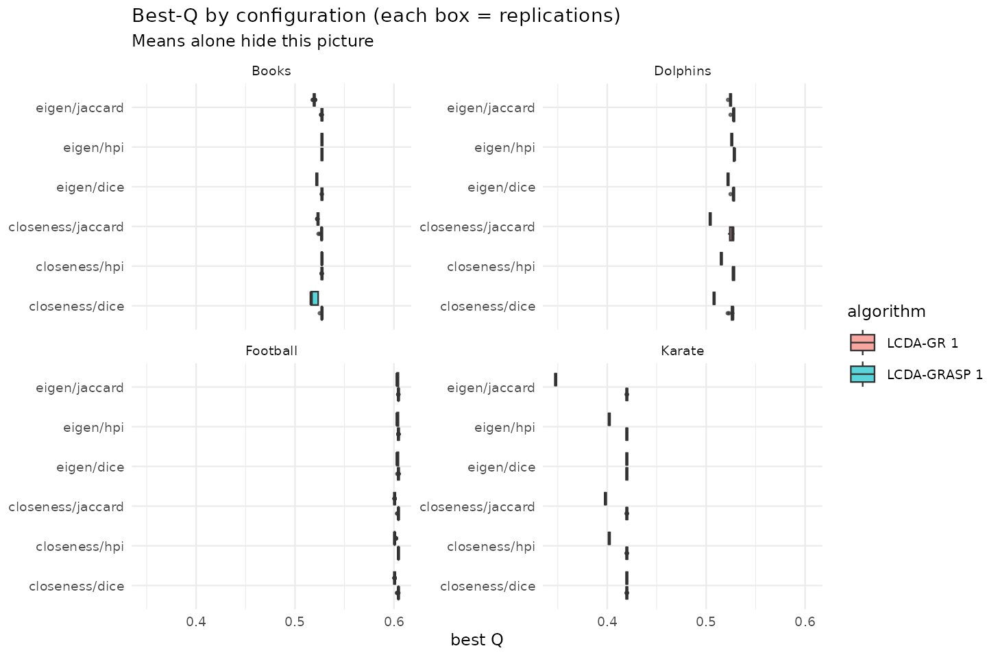
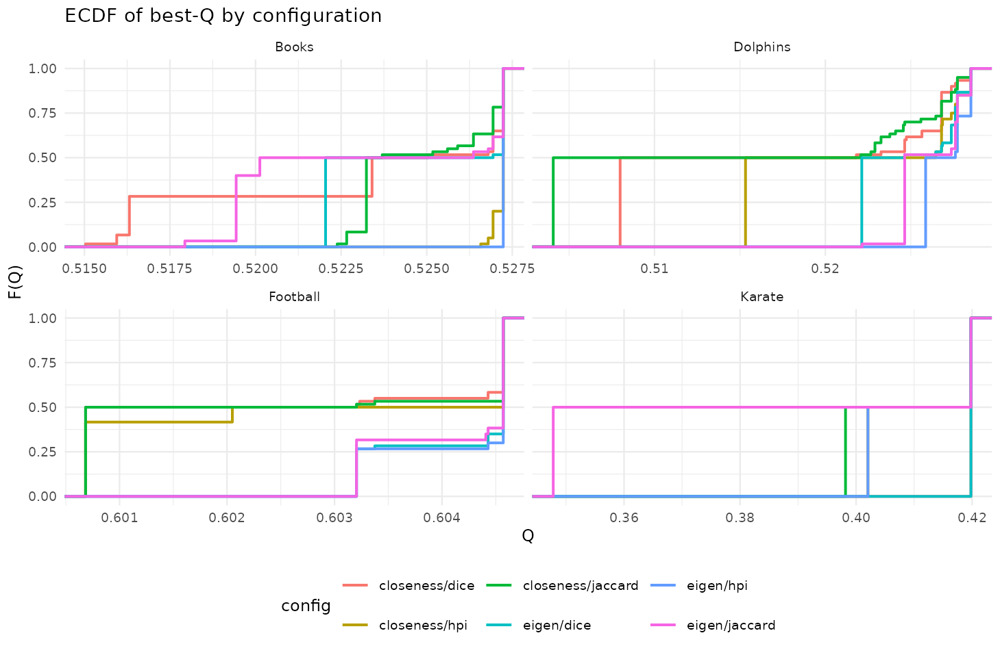
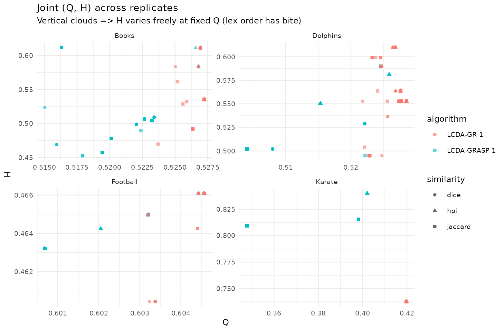

Exploratory distributions of Q and H (Tukey)
Source:vignettes/eda-distributions.Rmd
eda-distributions.RmdShow the distribution, not just the mean
Tukey’s lens privileges exploratory analysis. The paper reports means and significance letters; here we draw the boxplots, ECDFs and (Q, H) scatter that those tables hide, over replications per (graph algorithm centrality similarity).
library(ggplot2); library(dplyr)
#>
#> Attaching package: 'dplyr'
#> The following objects are masked from 'package:stats':
#>
#> filter, lag
#> The following objects are masked from 'package:base':
#>
#> intersect, setdiff, setequal, union
res <- d$results |> mutate(config = paste(centrality, similarity, sep = "/"))
ggplot(res, aes(config, Q, fill = algorithm)) +
geom_boxplot(outlier.size = 0.5, alpha = 0.65) +
facet_wrap(~ graph, scales = "free_y") + coord_flip() +
labs(title = "Best-Q by configuration (each box = replications)",
subtitle = "Means alone hide this picture", x = NULL, y = "best Q") +
theme_minimal(base_size = 9)
ggplot(res, aes(Q, colour = config)) +
stat_ecdf(geom = "step", linewidth = 0.7) +
facet_wrap(~ graph, scales = "free_x") +
labs(title = "ECDF of best-Q by configuration", x = "Q", y = "F(Q)") +
theme_minimal(base_size = 9) + theme(legend.position = "bottom")
ggplot(res, aes(Q, H, colour = algorithm, shape = similarity)) +
geom_point(alpha = 0.6, size = 1.4) +
facet_wrap(~ graph, scales = "free") +
labs(title = "Joint (Q, H) across replicates",
subtitle = "Vertical clouds => H varies freely at fixed Q (lex order has bite)") +
theme_minimal(base_size = 9)
d$results |>
dplyr::group_by(graph, centrality, similarity) |>
dplyr::summarise(Q = mean(Q), .groups = "drop_last") |>
dplyr::slice_max(Q, n = 1) |>
dplyr::ungroup() |>
knitr::kable(digits = 4, caption = "Best centrality/similarity per network (mean Q).")| graph | centrality | similarity | Q |
|---|---|---|---|
| Books | closeness | hpi | 0.5272 |
| Books | eigen | hpi | 0.5272 |
| Dolphins | closeness | hpi | 0.5214 |
| Dolphins | eigen | hpi | 0.5270 |
| Football | closeness | hpi | 0.6027 |
| Football | eigen | hpi | 0.6042 |
| Karate | closeness | dice | 0.4198 |
| Karate | eigen | dice | 0.4198 |
Reading. HPI + eigenvector is the modal winner, matching the paper’s recommendation — but the boxplots show the margins are often within noise, and the (Q, H) clouds are nearly vertical, i.e. varies at essentially fixed . That is exactly the situation in which a lexicographic (Q, then H) objective could in principle bite; whether it actually does is quantified in the Pool sensitivity article (it rarely does).
References
- Newman, M. E. J., & Girvan, M. (2004). Finding and evaluating community structure in networks. Phys. Rev. E, 69, 026113. doi:10.1103/PhysRevE.69.026113